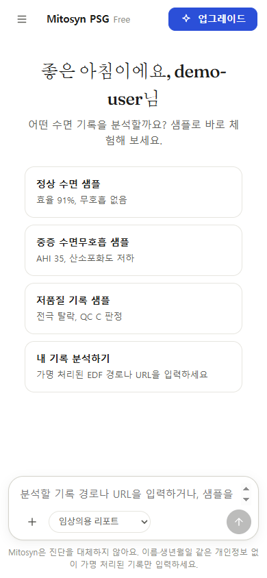
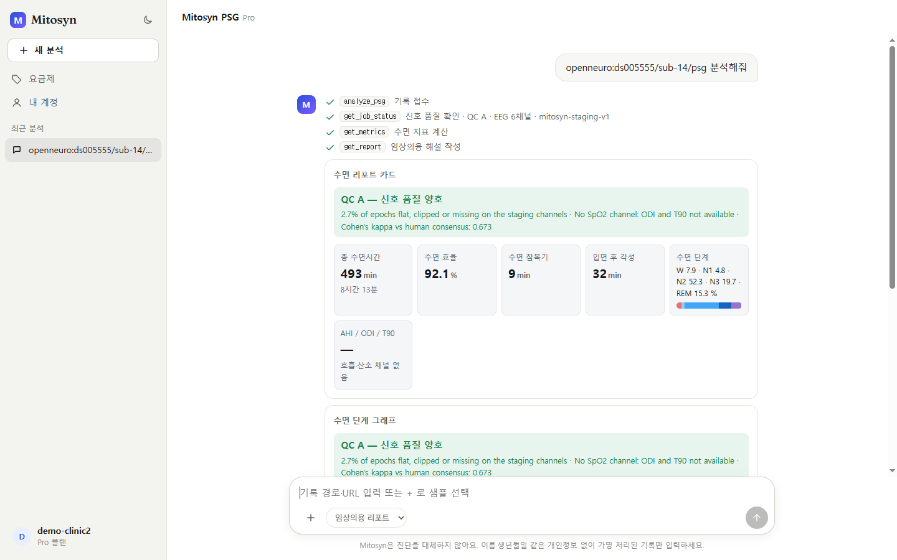
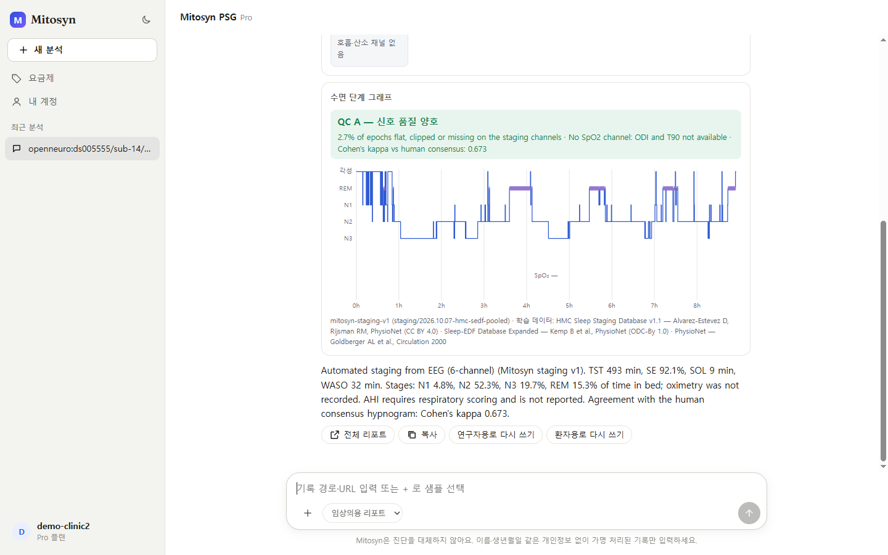
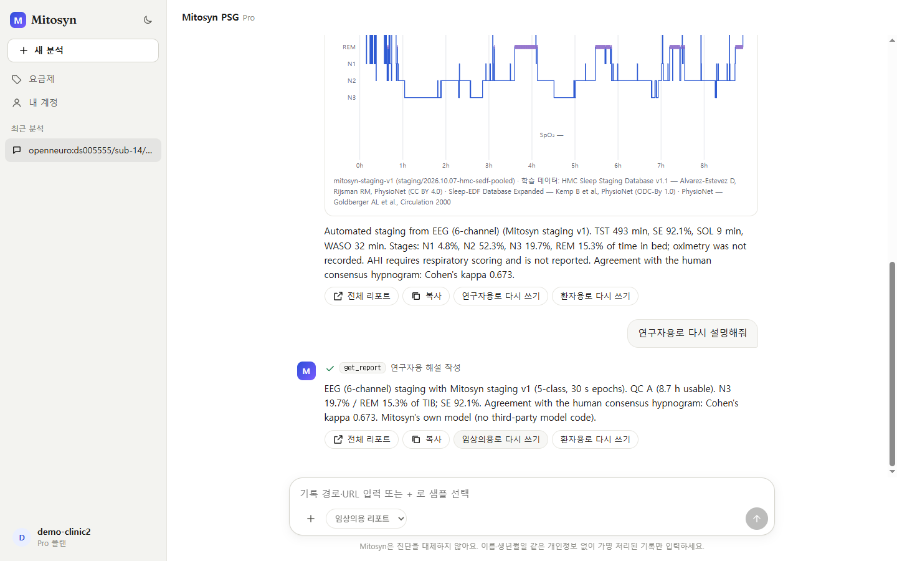
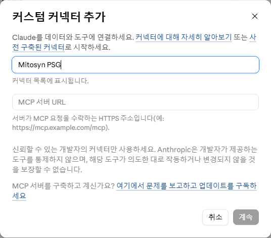
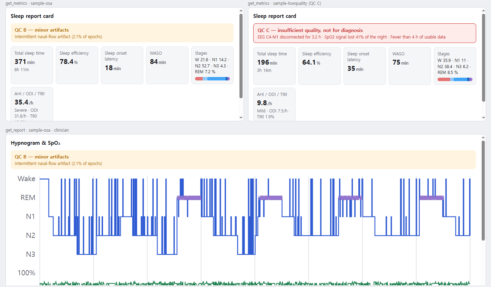
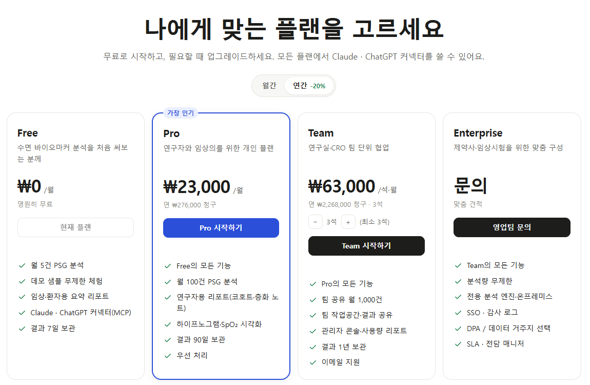
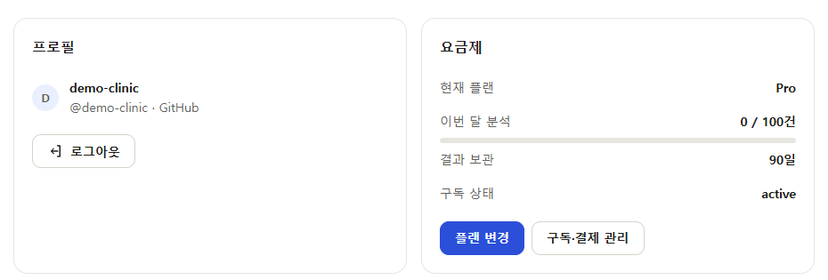

MITOSYN 시작 가이드 출시 준비 중 (베타)
수면 기록을 올리면, 판독 초안과 리포트가 나옵니다
Mitosyn은 밤사이 수면다원검사(PSG)와 웨어러블 EEG 기록을 자동으로 판독(스코어링)하고 ‘뇌 건강 리포트’를 만들어 주는 소프트웨어입니다. 웹앱에서 바로 쓰거나 Claude·ChatGPT에 커넥터로 연결해 대화 중에 사용할 수 있습니다.
Mitosyn은 연구·의사결정 보조용이며 진단을 대체하지 않습니다. 의료기기가 아니며, 모든 결과는 의사의 검토가 필요합니다.
현재 서비스는 출시 준비 중(베타)입니다. 정식 출시 전까지 화면과 기능이 바뀔 수 있습니다.
세 단계로 시작하기
-
가입
mcp.mitosyn.ai에서 GitHub 계정으로 로그인합니다. Free 플랜으로 바로 시작합니다.
-
샘플 체험
데모 샘플(정상·중증 수면무호흡·저품질)을 골라 결과 화면을 미리 봅니다. 샘플은 로그인 없이, 횟수 제한 없이 쓸 수 있습니다.
-
내 기록 분석
가명 처리된 EDF 기록의 경로나 URL을 입력해 분석합니다. 결과는 반드시 의사가 검토합니다.
웹앱 사용법
웹앱(https://mcp.mitosyn.ai)은 채팅처럼 사용합니다. 입력창에 기록 경로를 입력하거나 데모 샘플을 고르면, 분석 과정과 결과가 대화 속에 차례로 표시됩니다.

1. 분석 시작
- 샘플로 체험: 정상 수면(
sample-normal), 중증 수면무호흡(sample-osa, AHI 약 35), 저품질 기록(sample-lowquality, QC C) 중 하나를 고릅니다. - 내 기록 분석: 가명 처리된 EDF 파일의 경로나 URL을 입력합니다. 입력창 아래에서 리포트 대상(임상의용 등)을 고를 수 있습니다.
2. 진행 상황 확인
접수 → 신호 품질 확인(QC 등급) → 수면 지표 계산 → 해설 작성 순서로 진행 상황이 체크 표시와 함께 나타납니다.
3. 결과 보기: 리포트 카드

4. 수면 단계 그래프(하이프노그램)와 해설

5. 대상에 맞게 다시 쓰기
같은 결과를 임상의용 · 연구자용 · 환자용으로 다시 설명받을 수 있습니다. 해설 아래 버튼을 누르거나 “연구자용으로 다시 설명해줘”처럼 입력하세요. 연구자용 리포트는 Pro 플랜 이상에서 제공됩니다.

왼쪽 사이드바에서 새 분석, 요금제, 내 계정, 최근 분석 목록으로 이동할 수 있습니다.
Claude·ChatGPT 연결 베타
Mitosyn은 MCP(Model Context Protocol) 커넥터로 Claude와 ChatGPT에 연결할 수 있습니다. 연결하면 대화 중에 분석을 요청하고, 지원되는 환경에서는 결과가 카드 형태로 표시됩니다. 커넥터는 모든 플랜(Free 포함)에서 쓸 수 있으며, 사용량은 Mitosyn 계정 한도에 합산됩니다.
서버 주소:
https://mcp.mitosyn.ai/mcpClaude.ai에 연결
- 설정 → 커넥터로 이동합니다.
- + 추가 → 커스텀 커넥터 추가를 누릅니다.
- 이름에
Mitosyn PSG, MCP 서버 URL에https://mcp.mitosyn.ai/mcp를 입력하고 계속을 누릅니다. - 목록에서 연결을 누르고 GitHub로 로그인합니다. Mitosyn 웹앱과 같은 GitHub 계정을 쓰세요.

Claude Desktop은 claude.ai 계정의 커넥터 설정을 그대로 동기화하므로 따로 추가할 필요가 없습니다.
ChatGPT에 연결
- 설정 → 앱 및 커넥터 → 고급 설정에서 개발자 모드를 켭니다.
- 만들기를 누르고 URL에
https://mcp.mitosyn.ai/mcp를 입력, 인증 방식은 OAuth를 고릅니다. - GitHub로 로그인해 연결을 마칩니다.
이렇게 물어보세요
데모 기록 sample-osa를 분석하고 임상의용으로 설명해줘
sample-osa, 오른쪽: sample-lowquality(QC C), 아래: 하이프노그램과 SpO₂.커넥터가 쓰는 도구
| 도구 | 하는 일 |
|---|---|
analyze_psg | 가명 처리된 기록의 참조(경로·URL)를 제출하고 작업 번호(job_id)를 받습니다. |
get_job_status | 진행 상태와 QC 등급을 확인합니다. |
get_metrics | TST, 수면 효율, 수면 잠복기, WASO, 단계별 비율, (가능한 경우) AHI·ODI·T90을 가져옵니다. |
get_report | 임상의·연구자·환자용 해설과 리포트 링크를 가져옵니다. |
send_feedback | 결과에 대한 평가(👍/👎)와 이유·의견을 Mitosyn 팀에 전달합니다. |
데이터 준비
지원하는 기록
- 형식: EDF·BDF 파일. 일반적인 PSG 장비(예: Nox, Embla, Philips)나 웨어러블 EEG에서 내보낸 기록.
- 웨어러블 기기 파일: 아래 형식을 그대로 올릴 수 있습니다. 큰 파일은
.gz로 압축해 올리세요(최대 2GB). - 채널: EEG 채널은 자동으로 찾아 씁니다. 움직임·호흡·심전도 채널은 수면 단계 판정에 쓰지 않습니다.
- SpO₂(선택): 산소포화도 채널이 있으면 ODI와 T90도 계산합니다.
- AHI: 호흡 이벤트 판독이 필요하므로, EEG만으로 단계를 판정한 경우에는 나오지 않습니다.
- 길이: 최소 10분. 30초 단위(에포크)로 W·N1·N2·N3·REM의 5단계를 판정합니다.
웨어러블 기기별 올리는 방법
| 기기 | 내보내기 | 올리는 파일 |
|---|---|---|
| Bitbrain (Ikon Sleep 등) | 전용 소프트웨어(SennsLite)에서 EDF로 내보내기 | EDF |
| Muse 2 · Muse S · Muse S Athena | Muse 연구용 앱의 EDF/CSV, 또는 Mind Monitor·muse-lsl로 기록한 CSV | EDF 또는 CSV |
| BrainFlow로 직접 기록 | DataFilter.write_file로 저장한 파일 | TXT/TSV — 업로드할 때 기기(Muse 2 / Muse S / Athena)를 고르세요 |
웹앱 입력창 왼쪽 + 메뉴의 “내 기록 파일 올리기”를 누르면 파일이 올라간 뒤 바로 분석이 시작됩니다. 웨어러블 2~4채널(AF7·AF8·TP9·TP10 등)도 자동으로 인식합니다.
Muse·Bitbrain 기기 연동은 사용자가 직접 내보낸 파일을 올리는 방식입니다. 기기 제조사와의 공식 제휴나 인증을 뜻하지 않습니다.
가명 처리 체크리스트
Mitosyn에는 가명 처리된 기록만 올려 주세요. 업로드 전 아래를 확인하세요.
- 파일 이름과 경로에 환자 이름이 없습니다.
- EDF 헤더의 환자 정보(이름, 생년월일 등) 칸을 비우거나 임의 코드로 바꿨습니다. (올리면 Mitosyn이 헤더의 환자·기록 정보, 검사 일시, 주석을 한 번 더 지웁니다.)
- 주민등록번호, 의무기록번호(MRN), 이메일 주소가 어디에도 들어 있지 않습니다.
- 기관 내부 대응표(코드 ↔ 실제 환자)는 Mitosyn 밖에서 따로 보관합니다.
이름, 이메일, 주민등록번호, 생년월일, 의무기록번호처럼 보이는 입력은 자동으로 거절됩니다. 거절되면 가명 처리 후 다시 시도하세요.
결과 읽는 법
주요 지표
| 지표 | 뜻 |
|---|---|
| TST 총 수면시간 | 실제로 잠든 시간의 합계입니다(각성 시간 제외). |
| SE 수면 효율 | 침대에 누워 있던 시간 중 실제로 잔 시간의 비율(%)입니다. |
| SOL 수면 잠복기 | 기록을 시작(불 끈 시점)한 뒤 처음 잠들 때까지 걸린 시간입니다. |
| WASO 입면 후 각성 | 처음 잠든 뒤 중간에 깨어 있던 시간의 합계입니다. |
| 수면 단계 비율 | W(각성)·N1·N2·N3(깊은 잠)·REM이 각각 차지한 비율(%)입니다. |
| AHI · ODI · T90 | 수면무호흡 관련 지표로, 필요한 채널이 있을 때만 표시됩니다. AHI는 호흡 이벤트 판독이 있어야 하며, ODI·T90은 SpO₂ 채널이 필요합니다. |
하이프노그램은 밤사이 수면 단계가 어떻게 바뀌었는지 시간 순서로 보여 주는 계단형 그래프입니다. SpO₂ 채널이 있으면 아래에 산소포화도 그래프가 함께 표시됩니다.
사람 판독과의 일치도(Cohen’s kappa)는 기록에 사람이 매긴 참고 라벨이 있을 때만 표시됩니다.
QC(신호 품질) 등급
QC 메모에는 어떤 채널이 얼마나 끊겼는지, SpO₂가 없어 계산하지 못한 지표가 무엇인지 등이 적힙니다.
리포트 대상
- 임상의용: 판독 검토에 필요한 지표와 소견 중심. (모든 플랜)
- 환자용: 쉬운 말로 풀어 쓴 설명. (모든 플랜)
- 연구자용: 판정 방법, 품질, 일치도 등 세부 정보 중심. (Pro 이상)
어떤 리포트든 자동 판독 초안입니다. 연구·의사결정 보조용이며 진단을 대체하지 않습니다. 결과는 의사가 검토해야 합니다.
요금제와 결제
모든 금액은 원화(KRW) 기준입니다. 무료로 시작하고 필요할 때 업그레이드하세요.
Free
₩0
영구 무료
- 월 5건 분석
- 데모 샘플 무제한
- 임상의·환자용 리포트
- Claude·ChatGPT 커넥터
- 결과 7일 보관
Pro
₩29,000/월
연간 결제 시 월 ₩23,000
- 월 100건 분석
- 연구자용 리포트
- 결과 90일 보관
- 우선 처리
Team
₩79,000/석·월
연간 결제 시 석당 월 ₩63,000 · 최소 3석
- 팀 공유 월 1,000건 분석
- 팀 작업공간
- 관리자 콘솔
- 결과 1년 보관
- 이메일 지원
Enterprise
문의
영업팀 상담
- 분석량 무제한
- 전용 엔진·온프레미스
- SSO
- 감사 로그
- DPA
- SLA
| Free | Pro | Team | Enterprise | |
|---|---|---|---|---|
| 월 요금 | ₩0 | ₩29,000 | ₩79,000/석 | 문의 |
| 연간 결제(월 환산) | — | ₩23,000 | ₩63,000/석 | 문의 |
| 월 분석 | 5건 | 100건 | 공유 1,000건 | 무제한 |
| 데모 샘플 | 무제한 | 무제한 | 무제한 | 무제한 |
| 리포트 | 임상의·환자 | + 연구자 | + 연구자 | + 연구자 |
| 결과 보관 | 7일 | 90일 | 1년 | 문의 |
| 기타 | 커넥터 | 우선 처리 | 최소 3석, 팀 작업공간, 관리자 콘솔, 이메일 지원 | 전용 엔진·온프레미스, SSO, 감사 로그, DPA, SLA |

구독 관리
- 플랜 변경과 결제는 내 계정 → 구독·결제 관리에서 합니다.
- 분석 한도는 매월 초기화됩니다.
- 언제든 해지할 수 있으며, 해지해도 이미 결제한 기간이 끝날 때까지 이용할 수 있습니다.

개인정보와 보안
- 가명 처리된 기록만 받습니다. 이름, 이메일, 주민등록번호, 생년월일, 의무기록번호처럼 보이는 입력은 자동으로 거절됩니다.
- 올린 원본 파일은 분석이 끝나면 삭제합니다. 분석하지 않은 업로드는 24시간 뒤 삭제됩니다. 분석 결과는 플랜의 보관 기간 동안만 보관합니다(Free 7일 · Pro 90일 · Team 1년).
- 헤더 비식별화: 올린 EDF·BDF에서 환자·기록 식별 정보, 검사 일시, 자유 텍스트 주석을 지운 뒤 처리합니다.
- 내 리포트는 나만 봅니다. 분석 결과와 리포트 링크는 만든 계정으로 로그인해야 열립니다(데모 샘플 제외).
- 내 데이터 권리: 내 계정 → 데이터와 개인정보에서 데이터를 내려받거나(JSON), 계정과 모든 데이터를 삭제할 수 있습니다. 삭제하면 분석 기록·결과·사용량·Claude·ChatGPT 연결이 모두 지워지고 구독은 해지됩니다.
- 모델 개선 동의(선택): 가명 처리된 결과와 피드백을 모델 개선에 쓰는 것은 동의한 경우에만 하며, 언제든 철회할 수 있습니다.
- 로그인은 GitHub 계정으로 합니다. Claude·ChatGPT 커넥터도 같은 GitHub 계정으로 인증합니다.
- Enterprise 고객은 SSO, 감사 로그, DPA(데이터 처리 계약), 전용 엔진·온프레미스 구성을 상담할 수 있습니다.
개인정보 처리에 관한 문의는 hello@mitosyn.ai로 보내 주세요. 보안 취약점 제보도 같은 주소로 받습니다.
피드백과 문제 신고
- 결과마다 👍 / 👎: 해설 아래 버튼으로 평가하세요. 👎를 누르면 이유(수면 단계가 틀려요, 수치가 이상해요, QC 판정이 이상해요, 해설이 어려워요, 너무 느려요)를 고르고 의견을 남길 수 있습니다. 판독 수정 의견은 모델 개선에 가장 큰 도움이 됩니다.
- 문제 신고: 왼쪽 메뉴의 문제 신고에서 분류와 내용을 적어 보내면 접수 번호(MTS-…)를 드립니다. “진단 정보 첨부”를 켜면 현재 페이지, 최근 작업 ID, 앱 버전, 브라우저, 최근 오류 메시지가 함께 전달됩니다. 신호·결과 데이터는 포함되지 않습니다.
- Claude·ChatGPT에서: “이 결과의 수면 단계가 틀린 것 같다고 Mitosyn에 피드백 보내줘”라고 말하면
send_feedback도구로 전달됩니다. - 서비스 상태: 웹앱 오른쪽 위 배지에서 분석 엔진 상태(정상 · 지연 · 점검 중)를 확인할 수 있습니다.
의견에는 환자 이름, 생년월일, 등록번호 같은 식별정보를 적지 마세요.
모델과 데이터 출처
수면 단계 판정에는 Mitosyn이 직접 개발한 모델 Mitosyn staging v1을 사용합니다.
성능(내부 검증)
- 대상자 단위로 분리한 5-겹 교차검증(5-fold, subject-held-out): 정확도 78.4%, Cohen’s kappa 0.71
- 학습에 쓰지 않은 웨어러블·PSG 기록 외부 점검: kappa 0.46–0.67 (소규모, n=6)
위 수치는 내부 검증 결과이며 임상 검증이 아닙니다. 기록 장비와 신호 품질에 따라 성능은 달라질 수 있습니다.
학습 데이터와 출처 표기
- HMC Sleep Staging Database v1.1 — Alvarez-Estevez D, Rijsman RM. PhysioNet. 라이선스: CC BY 4.0
- Sleep-EDF Database Expanded — Kemp B et al. PhysioNet. 라이선스: ODC-By 1.0
- PhysioNet — Goldberger AL et al. “PhysioBank, PhysioToolkit, and PhysioNet.” Circulation 2000.
자주 묻는 질문
Mitosyn 결과로 진단할 수 있나요?
아니요. Mitosyn은 의료기기가 아니며 연구·의사결정 보조용입니다. 진단을 대체하지 않으며, 모든 결과는 의사의 검토가 필요합니다.
지금 바로 쓸 수 있나요?
현재 출시 준비 중(베타)입니다. 정식 출시 일정은 hello@mitosyn.ai로 문의해 주세요.
로그인 없이 써 볼 수 있나요?
네. 데모 샘플(sample-normal, sample-osa, sample-lowquality)은 로그인 없이 체험할 수 있습니다. 내 기록을 분석하려면 GitHub로 로그인하세요.
AHI가 “—”로 나옵니다.
AHI는 호흡 이벤트 판독이 필요해서, EEG만으로 수면 단계를 판정한 경우에는 계산되지 않습니다. ODI·T90은 SpO₂ 채널이 있어야 나옵니다.
QC C가 나왔어요.
신호 품질이 부족하다는 뜻입니다. 진단 근거로 쓰지 말고 재검사를 권장합니다. QC 메모에서 어떤 채널에 문제가 있었는지 확인하세요.
입력이 거절됐어요.
이름·이메일·주민등록번호·생년월일·의무기록번호처럼 보이는 내용이 있으면 자동으로 거절됩니다. 파일 이름, 경로, EDF 헤더를 가명 처리한 뒤 다시 시도하세요.
너무 짧은 기록도 분석되나요?
최소 10분 이상의 기록이 필요합니다.
커넥터로 분석해도 웹앱 사용량에 포함되나요?
네. 같은 GitHub 계정으로 연결하면 사용량은 하나의 Mitosyn 계정 한도에 합산됩니다.
해지하면 바로 이용이 끊기나요?
아니요. 언제든 해지할 수 있고, 이미 결제한 기간이 끝날 때까지 이용할 수 있습니다. 내 계정 → 구독·결제 관리에서 해지합니다.
문의
제품, 요금제, Enterprise 상담, 개인정보 관련 문의는 hello@mitosyn.ai로 보내 주세요.